감정평가사-1차-1교시(구) (2014-07-05 기출문제)
1과목: 민법(총칙,물권)
1. 법인의 기관에 관한 설명으로 옳지 않은 것은? (다툼이 있으면 판례에 의함)
- 정관에 다른 규정이 없는 한, 사원총회의 결의사항은 총회를 소집할 때 미리 적법하게 통지한 사항에 한한다.
- 이사 사임의 의사표시가 법인의 대표자에게 도달한 후에는, 특별한 사정이 없으면, 그 의사표시를 철회할 수 없다.
- 사원총회 소집권자가 총회 구성원들에게 총회 개최의 연기를 통지할 때에는 총회의 소집과 동일한 방식에 의할 필요가 없다.
- 정관이나 사원총회의 결의로 금지하지 않는 한, 이사는 타인으로 하여금 법인의 제반사무 처리를 포괄적으로 대리하게 할 수 있다.
- 사원총회의 결의는 법률 또는 정관에 다른 규정이 없으면 사원 과반수의 출석과 출석사원의 결의권의 과반수로써 한다.
(정답률: 알수없음)

2. 신의성실의 원칙에 관한 설명으로 옳은 것은? (다툼이 있으면 판례에 의함)
- 강행법규 위반임을 알면서 법률행위를 한 자가 후에 그 법률행위가 강행법규 위반으로 인하여 무효임을 주장하는 것은, 특별한 사정이 없는 한, 신의칙에 반한다.
- 본인의 지위를 단독으로 상속한 무권대리인이 본인의 지위에서 상속 전에 행한 무권대리행위의 추인을 거절하여도 신의칙에 반하지 않는다.
- 사정변경 원칙에서의 '사정'은 계약의 기초가 된 일방 당사자의 주관적 사정을 말한다.
- 토지의 소유권을 적법하게 취득한 새로운 권리자에게 실효의 원칙을 적용함에 있어서는 종전 토지소유자가 자신의 권리를 행사하지 않았다는 사정을 고려하여야 한다.
- 법원은 당사자의 주장이 없더라도 직권으로 신의칙에 반하는 것임을 판단할 수 있다.
(정답률: 알수없음)
3. 제한능력제도에 관한 설명으로 옳지 않은 것은?
- 피성년후견인이 행한 모든 재산법상의 법률행위는 언제든지 취소할 수 있다.
- 가정법원은 한정후견개시의 심판을 할 때 본인의 의사를 고려하여야 한다.
- 가정법원은 특정후견의 심판을 할 때 본인의 의사에 반하여 할 수 없다.
- 가정법원이 피한정후견인에 대해 성년후견 개시의 심판을 하는 경우, 종전의 한정후견의 종료심판을 한다.
- 가정법원은 청구권자의 청구가 없는 한, 성년후견개시의 심판을 직권으로 할 수 없다.
(정답률: 알수없음)
4. 비법인사단에 관한 설명으로 옳지 않은 것은? (다툼이 있으면 판례에 의함)
- 비법인사단이 타인 간의 금전채무를 보증하는 행위는 총유물의 관리ㆍ처분행위라고 볼 수 없다.
- 사단법인의 하부조직이 스스로 단체로서의 실체를 갖추고 독자적인 활동을 하고 있다면, 사단법인과는 별개의 독립된 비법인사단으로 볼 수 있다.
- 비법인사단의 구성원은 총유재산에 대한 보존행위로서 각자 소를 제기할 수 있다.
- 비법인사단이 해산하였더라도 청산사무가 완료될 때까지는 청산의 목적범위 내에서 권리ㆍ의무의 주체가 된다.
- 사단법인에 관한 민법규정 중 법인격을 전제로 한 규정을 제외하고는 비법인사단에도 유추적용된다.
(정답률: 알수없음)
5. 미성년자에 관한 설명으로 옳지 않은 것은? (다툼이 있으면 판례에 의함)
- 1995. 3. 30. 오후 9시에 출생한 자는 2014. 3. 29. 오후 12시에 성년자로 된다.
- 법정대리인이 미성년자에게 특정한 영업을 허락한 경우에 미성년자는 그 영업에 관하여는 성년자와 동일한 행위능력을 가진다.
- 미성년자가 부담 없는 증여를 받는 행위는 법정대리인의 동의를 요하지 않는다.
- 미성년자가 월 소득범위 내에서 소규모의 일상적인 신용구매계약을 체결하였더라도 스스로 얻은 소득에 대해 법정대리인의 묵시적 처분허락이 있었다고 볼 수는 없다.
- 미성년자는 자신의 노무제공에 대한 임금의 청구를 독자적으로 할 수 있다.
(정답률: 알수없음)
6. 실종선고에 관한 설명으로 옳지 않은 것은? (다툼이 있으면 판례에 의함)
- 선박침몰로 인한 실종기간은 1년이고, 그 기간은 선박이 침몰한 때부터 기산한다.
- 실종선고가 취소되지 않는 한, 실종선고의 효과가 반증을 통하여 번복되는 것은 아니다.
- 법원이 실종선고 및 그 취소를 할 때에는 반드시 공시최고의 절차를 거쳐야 한다.
- 실종선고를 받은 자는 실종기간이 만료한 때에 사망한 것으로 본다.
- 실종선고에 의한 사망의 효과는 실종자의 종래의 주소나 거소를 중심으로 하는 사법적 법률관계에 국한된다.
(정답률: 알수없음)
7. 민법 제35조에 의한 법인의 불법행위책임에 관한 설명으로 옳지 않은 것은? (다툼이 있으면 판례에 의함)
- 법령상 대표권 없는 이사의 행위에 대해서는 법인의 책임이 성립하지 않는다.
- 대표자로 등기되지 않았으나 법인을 실질적으로 운영하면서 법인을 사실상 대표하는 자의 직무수행에 대해서도 법인의 책임이 성립할 수 있다.
- 대표자 개인의 이익을 도모하기 위한 것이었더라도 외형상 객관적으로 법인의 대표자의 직무행위라고 인정할 수 있는 것이면, 법인의 책임이 성립할 수 있다.
- 대표기관의 고의적인 불법행위가 있으면 피해자에게 그 불법행위 내지 손해발생에 과실이 있더라도, 과실상계는 허용되지 않는다.
- 법인이 피해자에게 손해를 배상하면, 법인은 그 직무를 수행한 대표기관에 대해 선량한 관리자의 주의의무 위반을 이유로 구상권을 행사할 수 있다.
(정답률: 알수없음)
8. 물건에 관한 설명으로 옳은 것은? (다툼이 있으면 판례에 의함)
- 부동산은 언제나 종물이 될 수 없다.
- 주물 자체의 효용과 직접적인 관계가 없는 물건도 종물이 될 수 있다.
- 물건의 용법에 의하여 수취하는 산출물은 법정과실에 해당한다.
- 천연과실은 수취할 권리의 존속기간 일수의 비율로 취득함이 원칙이다.
- 건물의 개수는 공부상의 등록뿐만 아니라 거래관념에 따라 제반사정을 참작하여 결정한다.
(정답률: 알수없음)
9. 원칙적으로 등기권리자와 등기의무자가 공동으로 신청하여야 하는 것은?
- 저당권말소등기
- 판결에 의한 등기
- 부동산표시의 변경등기
- 신탁재산에 속하는 부동산의 신탁등기
- 대법원규칙으로 정하는 포괄승계에 따른 등기
(정답률: 알수없음)
10. 등기의 유효요건에 관한 설명으로 옳지 않은 것은? (다툼이 있으면 판례에 의함)
- 중복된 소유권보존등기의 등기명의인이 동일인이 아닌 경우, 선등기가 원인무효가 아닌 한 후등기는 무효이다.
- 무효등기의 유용에 관한 추인은 언제나 명시적으로 이루어져야 한다.
- 무효인 중복등기에 터 잡은 등기부시효취득은 인정되지 않는다.
- 중간생략등기의 사법상 효력이 모든 경우에 부정되는 것은 아니다.
- 소유권에 관한 등기가 적법한 원인 없이 말소되더라도 원칙적으로 그 소유권의 효력에는 아무런 영향을 미치지 않는다.
(정답률: 알수없음)
11. 점유에 관한 설명으로 옳은 것은? (다툼이 있으면 판례에 의함)
- 무권리자로부터 토지를 매수한 자의 점유는 다른 특별한 사정이 없는 한 자주점유이다.
- 점유가 성립하기 위해서는 반드시 물건에 대한 물리적ㆍ현실적 지배가 수반되어야 한다.
- 건물의 소유자가 아닌 자가 실제로 건물을 점유하고 있다면 특별한 사정이 없는 한, 당연히 건물의 부지를 점유한다고 보아야 한다.
- 토지에 대한 소유권보존등기가 이루어졌다면, 그 등기명의자는 그 무렵 다른 사람으로부터 당해 토지에 대한 점유를 이전받았다고 본다.
- 부동산을 매도하고 등기를 이전하였으나, 아직 그 부동산을 인도하지 않은 매도인의 점유는 특별한 사정이 없는 한 자주점유로 본다.
(정답률: 알수없음)
12. 점유보호청구권에 관한 설명으로 옳은 것은? (다툼이 있으면 판례에 의함)
- 직접점유자가 제3자로부터 그 점유를 침탈당하더라도 간접점유자는 점유보호청구권을 행사할 수 없다.
- 유실물을 우연히 습득한 자에 대해서는 점유물반환청구권을 행사할 수 없다.
- 점유물반환청구의 상대방은 현재 점유를 침해하고 있는 자이므로, 점유침탈자의 선의의 특별승계인도 그 상대방이 된다.
- 영업상 타인의 지시를 받아 물건을 사실상 지배하는 자에게도 점유보호청구권이 인정된다.
- 점유물반환청구권의 행사기간은 출소기간이 아니다.
(정답률: 알수없음)
13. 첨부(添附)에 관한 설명으로 옳은 것은? (다툼이 있으면 판례에 의함)
- 부동산에 부합된 물건이 타인의 권원에 의하여 부합되었더라도 사실상 분리가 불가능하여 부동산의 구성부분이 되었다면, 그 물건의 소유권은 부동산의 소유자에게 귀속된다.
- 동산이 부동산에 부합되면 그 동산의 소유권자는 부합물 위에 지분권을 취득한다.
- 동산이 부동산에 부합되더라도 그 동산을 목적으로 하는 다른 권리는 소멸하지 않는다.
- 가공물의 소유권은 원칙적으로 원재료의 가공자에게 속한다.
- 동산간의 부합에 있어서 합성물의 소유권은 원칙적으로 주종의 구별 없이 가액에 비례하여 공유로 한다.
(정답률: 알수없음)
14. 법률행위의 목적에 관한 설명으로 옳지 않은 것은? (다툼이 있으면 판례에 의함)
- 도박채무의 이행으로써 토지를 양도하는 계약은 반사회적 법률행위로서 무효이다.
- 법률행위의 목적의 불능은 확정적이어야 하고, 실현가능성이 있는 일시적 불능은 이에 해당하지 않는다.
- 사찰이 그 존립에 필요불가결한 재산인 임야를 증여하는 계약은 무효이다.
- 부첩관계를 유지하는 계약은 본처의 사전 동의가 있어도 반사회적 법률행위이다.
- 법률행위의 동기가 사회질서에 반한다는 사실을 법률행위 시에 상대방이 알았더라도, 그 상대방과 법률행위를 한 선의의 제3자는 그 법률행위의 유효를 주장할 수 있다.
(정답률: 알수없음)
15. 법률행위의 해석에 관한 설명으로 옳지 않은 것은? (다툼이 있으면 판례에 의함)
- 오표시무해(誤表示無害)의 원칙은 법률행위 해석 중 자연적 해석에 따른 것이다.
- 비전형의 혼합계약을 해석함에는 사용된 문언의 내용에 의하여 당사자가 그 표시행위에 부여한 객관적 의미를 있는 그대로 확정하는 것이 필요하다.
- 당사자가 특정 토지를 계약 목적물로 합의하였으나 그 지번의 표시에 관한 착오로 인하여 계약서에 그 토지와 다른 토지로 표시한 경우, 계약서에 표시된 토지에 대하여 계약이 성립한다.
- 사실인 관습은 당사자의 주장에 구애됨이 없이 법원이 스스로 직권에 의하여 판단할 수 있다.
- 계약을 체결한 자가 타인의 이름으로 법률행위를 한 경우, 계약당사자의 확정에 관한 행위자와 상대방의 의사가 일치하면 그 일치한 의사대로 행위자 또는 명의인을 계약의 당사자로 확정해야 한다.
(정답률: 알수없음)
16. 불공정한 법률행위에 관한 설명으로 옳지 않은 것은? (다툼이 있으면 판례에 의함)
- 어업권 소멸로 인한 손실보상금의 분배에 관하여 어촌계 총회의 결의가 현저하게 불공정한 경우, 폭리행위가 될 수 있다.
- 매매계약이 불공정한 법률행위에 해당하는 경우, 특별한 사정이 없는 한, 불이익을 입게 되는 당사자가 그 불공정성을 이유로 제소를 하지 못하게 하는 부제소합의는 무효이다.
- 매매계약에서 의사표시를 한 자가 궁박 상태에 있었더라도 상대방이 그와 같은 사정을 알면서 이를 이용하려는 의사가 없으면 그 계약은 불공정한 법률행위가 되지 않는다.
- 불공정한 법률행위를 이유로 무효를 주장하는 자는 피해자의 궁박, 경솔과 무경험을 모두 증명해야 한다.
- 불공정한 법률행위로서 무효인 법률행위는 추인에 의해서 유효로 될 수 없다.
(정답률: 알수없음)
17. 甲은 乙 소유의 X토지를 매수하면서 자신과 명의신탁약정을 한 친구 丙 앞으로 소유권이전등기를 해 주기로 乙과 합의하였고, 그에 따라 X토지의 소유권이전등기가 丙 명의로 마쳐졌다. 다음 설명 중 옳지 않은 것은? (다툼이 있으면 판례에 의함)
- 丙 명의의 소유권이전등기는 무효이다.
- 乙은 丙에게 진정명의회복을 원인으로 하는 소유권이전등기를 청구할 수 있다.
- 甲은 乙을 대위하여 丙에게 소유권이전등기의 말소청구를 할 수 없다.
- 乙은 甲에 대하여 소유권이전등기의무를 부담한다.
- 丙으로부터 정당하게 X토지를 매수한 丁이 甲과 丙 사이의 명의신탁 약정사실을 알았더라도, 丁은 丙으로부터 X토지를 유효하게 취득할 수 있다.
(정답률: 알수없음)
18. 진의 아닌 의사표시에 관한 설명으로 옳지 않은 것은? (다툼이 있으면 판례에 의함)
- 사인의 공법행위에는 진의 아닌 의사표시의 무효에 관한 규정이 적용되지 않는다.
- 진의 아닌 의사표시로서 무효가 되는 경우에 그 무효는 선의의 제3자에게 대항하지 못한다.
- 표의자가 의사표시의 내용을 진정으로 바라지는 않았더라도, 당시 상황에서는 그것을 최선이라고 판단하여 의사표시를 하였다면, 진의 아닌 의사표시라고 할 수 없다.
- 재산을 강제로 빼앗긴다는 것이 표의자의 본심에 잠재되어 있었다 하여도 표의자가 강박에 의하여 증여의 의사표시를 한 이상, 그 의사표시는 진의 아닌 의사표시라고 할 수 없다.
- 진의 아닌 의사표시에서 진의는 표의자가 진정으로 마음속에서 바라는 사항을 말한다.
(정답률: 알수없음)
19. 사기ㆍ강박에 의한 의사표시에 관한 설명으로 옳지 않은 것은? (다툼이 있으면 판례에 의함)(문제 오류로 가답안 발표시 4번으로 발표되었지만 확정답안 발표시 1, 4번이 정답처리 되었습니다. 여기서는 가답안인 4번을 누르시면 정답 처리 됩니다.)
- 상대방 있는 의사표시에 관하여 제3자가 사기를 행한 경우에 표의자는 상대방이 그 사실을 안 경우에 한하여 그 의사표시를 취소할 수 있다.
- 피기망자에게 손해를 가할 의사는 사기에 의한 의사표시의 성립요건이 아니다.
- 강박에 의한 의사표시가 스스로 의사결정을 할 수 있는 여지가 전혀 없는 상태에서 의사표시의 외형만 있는 것에 불과한 경우에 그 의사표시는 효력이 없다.
- 상대방이 불법적인 해악의 고지 없이 각서에 서명ㆍ날인할 것을 강력히 요구하는 것만으로도 강박이 된다.
- 교환계약의 일방 당사자가 자기 소유의 목적물의 가액을 시가보다 높게 허위로 고지하였더라도 특별한 사정이 없는 한, 기망행위에 해당하지 않는다.
(정답률: 알수없음)
20. 대리에 관한 설명으로 옳은 것은? (다툼이 있으면 판례에 의함)
- 부동산 입찰절차에서 동일한 물건에 관하여 이해관계가 다른 2인 이상의 대리인이 된 경우, 그 대리인이 한 입찰은 유효하다.
- 본인을 위하여 금전소비대차계약을 체결할 권한을 수여받은 대리인에게는, 특별한 사정이 없는 한, 본래의 계약을 해제할 대리권도 있다.
- 대리인이 수인인 경우에 다른 정함이 없으면 대리인은 공동으로 대리권을 행사하여야 한다.
- 피성년후견인이 아닌 자가 임의대리인이 된 후에 그에게 성년후견이 개시되면 그 대리권은 소멸한다.
- 대리권의 범위가 정해지지 않은 대리인은 보존행위만을 할 수 있다.
(정답률: 알수없음)
21. 복대리에 관한 설명으로 옳은 것은? (다툼이 있으면 판례에 의함)
- 복대리권은 대리인에 의한 수권행위의 철회에 의하여도 소멸한다.
- 법정대리인은 본인의 승낙이 있거나 부득이한 사유가 있는 때가 아니면 복대리인을 선임하지 못한다.
- 임의대리인이 본인의 지명 없이 복대리인을 선임한 경우에는, 그 부적임을 알고 본인에게 통지나 그 해임을 태만한 때가 아니면 본인에게 대하여 책임이 없다.
- 복대리인이 본인을 위한 것임을 표시하지 아니한 때에는, 원칙적으로 대리인을 위한 것으로 본다.
- 복대리인이 선임되면 대리인의 대리권은 소멸하고 복대리인만 본인을 대리하게 된다.
(정답률: 알수없음)
22. 표현대리에 관한 설명으로 옳지 않은 것은? (다툼이 있으면 판례에 의함)
- 권한을 넘은 표현대리인지를 판단할 때 정당한 이유의 유무는 대리행위 시를 기준으로 한다.
- 권한을 넘은 표현대리에서는 기본대리권의 내용이 되는 행위와 표현대리 행위가 반드시 같은 종류의 것이어야 한다.
- 부부간의 일상가사대리권을 기본대리권으로 하여 권한을 넘은 표현대리가 성립할 수 있다.
- 복대리인의 대리권은 권한을 넘은 표현대리의 기본대리권이 될 수 있다.
- 표현대리가 성립하여도 무권대리의 성질이 유권대리로 전환되는 것은 아니다.
(정답률: 알수없음)
23. 조건과 기한에 관한 설명으로 옳지 않은 것은? (다툼이 있으면 판례에 의함)
- 법률행위에 정지조건이 붙어 있다는 사실의 증명책임은 그 법률효과의 발생을 다투는 자에게 있다.
- 조건은 사적 자치에 의한 것으로 당사자가 그 의사에 의하여 임의로 정한 것이어야 한다.
- 조건 성취로 불이익을 받을 당사자가 과실로 신의성실에 반하여 조건 성취를 방해한 경우에도 상대방은 그 조건의 성취를 주장할 수 있다.
- 기한의 이익은, 당사자의 특약이나 법률행위의 성질에 의하여 분명하지 아니한 경우, 채권자의 이익을 위한 것으로 추정된다.
- 당사자가 조건 성취의 효력을 그 성취 전에 소급하게 할 의사를 표시한 경우에는 그 의사에 의한다.
(정답률: 알수없음)
24. 법률행위의 무효와 취소에 관한 설명으로 옳지 않은 것은? (다툼이 있으면 판례에 의함)
- 당사자가 무효임을 알고 추인한 때에는 새로운 법률행위를 한 것으로 본다.
- 취소할 수 있는 법률행위의 취소원인이 소멸한 후에 취소권자의 상대방이 이행을 청구한 경우에는 다른 사정이 없는 한, 법률상 당연히 추인이 있었던 것으로 본다.
- 취소할 수 있는 법률행위의 상대방이 확정된 경우에는, 그 취소는 그 상대방에 대한 의사표시로 하여야 한다.
- 제한능력자가 제한능력을 이유로 법률행위를 취소한 경우에는, 그 행위로 인하여 받은 이익이 현존하는 한도에서 상환책임이 있다.
- 취소할 수 있는 법률행위가 적법하게 취소되어 무효가 되었더라도 그 무효행위가 추인의 요건을 갖춘 경우에는 이를 다시 추인할 수 있다.
(정답률: 알수없음)
25. 소멸시효에 관한 설명으로 옳지 않은 것은? (다툼이 있으면 판례에 의함)
- 소멸시효는 그 기산일에 소급하여 효력이 생긴다.
- 소멸시효이익은 시효가 완성되기 전에 미리 포기하지 못한다.
- 주된 권리가 시효로 소멸하면 종된 권리에도 그 효력이 미친다.
- 20년의 시효에 걸리는 권리에 확정판결이 있으면, 그 시효기간은 10년으로 단축된다.
- 시효는 법률행위에 의하여 이를 가중할 수 없으나 경감할 수는 있다.
(정답률: 알수없음)
26. 소멸시효의 중단과 정지에 관한 설명으로 옳지 않은 것은? (다툼이 있으면 판례에 의함)
- 승인은 시효의 진행이 개시된 후에만 할 수 있고, 그 전에 승인하더라도 시효가 중단되지 않는다.
- 여러 차례의 최고가 있은 후, 재판상 청구가 있더라도 그 시효중단의 효력은 항상 최초의 최고를 한 때에 발생한다.
- 가압류에 의한 시효중단의 효력은 가압류의 집행보전의 효력이 존속하는 동안 계속된다.
- 재판상의 청구로 중단된 시효는 재판이 확정된 때로부터 새로이 진행한다.
- 천재 기타 사변으로 인하여 시효를 중단할 수 없을 때에는, 그 사유가 종료한 때로부터 1개월 내에는 시효가 완성하지 않는다.
(정답률: 알수없음)
27. 소유권에 관한 설명으로 옳지 않은 것은? (다툼이 있으면 판례에 의함)
- 소유자는 법률의 범위 내에서 소유물을 사용, 수익, 처분할 권리가 있다.
- 지적공부에 등록된 토지의 소유권 범위는 특별한 사정이 없는 한, 지적공부상 경계에 의하여 확정된다.
- 구분소유는 구분행위가 행해지고 건물이 완성되었더라도 집합건축물대장의 등록이나 구분건물의 표시에 관한 등기가 완료된 때에 성립한다.
- 구분소유권의 객체로서 적합한 물리적 요건을 갖추지 못한 건물의 일부가 구분소유권의 목적으로 등기되었더라도 구분소유권은 인정되지 않는다.
- 유실물은 법률에 정한 바에 의하여 공고한 후 6개월 내에 그 소유자가 권리를 주장하지 아니하면 다른 사정이 없는 한, 습득자가 그 소유권을 취득한다.
(정답률: 알수없음)
28. 부동산의 점유취득시효에 관한 설명으로 옳은 것은? (다툼이 있으면 판례에 의함)
- 자기소유의 부동산은 취득시효의 대상이 될 수 없다.
- 시효기간이 진행되던 중에 등기부상의 소유자가 변경된 경우, 시효완성자는 시효완성 당시의 소유자에 대하여 시효완성의 효과를 주장할 수 있다.
- 취득시효를 주장하는 자는 시효기간의 만료로 즉시 소유권을 취득한다.
- 취득시효를 주장하는 자는 반드시 실제로 점유를 개시한 때를 시효의 기산점으로 삼아야 한다.
- 취득시효가 완성되었더라도 등기를 하지 않고 있는 사이에 제3자가 그 부동산에 관한 소유권 이전등기를 마친 경우, 시효완성자는 원칙적으로 그 제3자에 대하여 시효완성의 효과를 주장할 수 있다.
(정답률: 알수없음)
29. 상린관계(相隣關係)에 관한 설명으로 옳지 않은 것은?
- 건물을 축조함에는 특별한 관습이 없으면, 경계로부터 반 미터 이상의 거리를 두어야 한다.
- 토지소유자는 이웃 토지로부터 자연히 흘러오는 물을 막지 못한다.
- 인접하여 토지를 소유한 자는 다른 관습이 없으면, 쌍방이 공동비용으로 통상의 경계표를 설치하기 위한 측량비용을 절반하여 부담한다.
- 고지(高地)의 소유자는 이웃 저지(低地)에 자연히 흘러내리는 이웃 저지에서 필요한 물을 자기의 정당한 사용범위를 넘어서 이를 막지 못한다.
- 흐르는 물이 저지에서 폐색(閉塞)된 때에는 특별한 관습이 없으면, 고지소유자는 자비로 소통에 필요한 공사를 할 수 있다.
(정답률: 알수없음)
30. 집합건물의 구분소유에 관한 설명으로 옳지 않은 것은? (다툼이 있으면 판례에 의함)
- 구분소유자는 전유부분의 보존ㆍ개량을 위하여 다른 구분소유자의 전유부분의 사용을 청구할 수 있다.
- 구조상ㆍ이용상의 독립성을 갖춘 건물부분은 구분소유권의 목적이 될 수 있다.
- 구분소유자의 대지사용권은 규약으로 달리 정함이 없는 한, 그가 가지는 전유부분의 처분에 따른다.
- 아파트의 지하실은 특별한 사정이 없는 한, 구분소유권의 목적이 될 수 없다.
- 각 구분소유자의 공용부분에 대한 지분은 규약으로 달리 정함이 없는 한, 그가 가지는 전유부분의 가액 비율에 따른다.
(정답률: 알수없음)
31. 민법상 부동산의 공동소유에 관한 설명으로 옳지 않은 것은? (다툼이 있으면 판례에 의함)
- 공유자는 자기지분을 원칙적으로 자유롭게 처분할 수 있으나, 합유지분의 처분에는 제한이 있다.
- 합유물의 분할청구는 인정되지 않지만, 조합체의 해산 시에는 분할이 인정된다.
- 공유물의 관리에 관한 사항은 특약이 없는 한, 지분의 과반수로 결정한다.
- 비법인사단의 사원은 정관 기타 계약에 정함이 없는 한, 그 지위를 상실하면 총유물에 관한 권리도 소멸한다.
- 비법인사단인 교회의 재산에 대하여 각 교인은 그 지분권을 인정받을 수 있다.
(정답률: 알수없음)
32. 지상권에 관한 설명으로 옳지 않은 것은? (다툼이 있으면 판례에 의함)
- 지상권자는 지상권을 유보한 채 지상물의 소유권만을 양도할 수 있다.
- 당사자가 지료에 관한 합의를 하였더라도 이를 등기하지 않았다면, 당해 지상권자에 대하여 지료지급을 청구할 수 없다.
- 구분지상권의 존속기간을 영구적인 것으로 약정하는 것도 허용된다.
- 지상권은 저당권의 목적이 될 수 있다.
- 지상권자는 지상권설정자의 명시적 반대에도 불구하고 지상권의 존속기간 내에서 그 토지를 타인에게 임대할 수 있다.
(정답률: 알수없음)
33. 관습상 법정지상권에 관한 설명으로 옳지 않은 것은? (다툼이 있으면 판례에 의함)
- 환지처분으로 인하여 토지와 그 지상건물의 소유자가 달라진 경우, 법정지상권이 그 지상건물의 토지 위에 성립한다.
- 법정지상권이 성립한 후 건물을 증ㆍ개축한 경우에도 법정지상권은 존속한다.
- 공유토지 위에 건물을 소유하고 있는 토지공유자 중 1인이 자기의 토지 지분만을 매도한 경우, 토지 전체에 관해 법정지상권은 성립할 수 없다.
- 법정지상권의 지료를 정하는 때에 법정지상권이 설정된 토지 위에 그 건물이 건립되어 있음으로 인하여 토지소유권이 제한받는 사정은 참작ㆍ평가해서는 안 된다.
- 시공회사가 자기 소유의 토지 위에 수위실을 건축한 후 그 부지를 타인에게 매도한 경우, 특별한 사정이 없는 한, 법정지상권이 성립될 수 있다.
(정답률: 알수없음)
34. 지역권에 관한 설명으로 옳지 않은 것은?
- 지역권은 소멸시효의 대상이 될 수 없다.
- 공유자의 1인이 지역권을 취득한 때에는 다른 공유자도 이를 취득한다.
- 승역지 소유자는 지역권의 행사를 방해하지 않는 범위 내에서 지역권자가 지역권의 행사를 위하여 승역지에 설치한 공작물을 사용할 수 있다.
- 지역권은 요역지 소유권의 상속에 의하여 취득될 수 있다.
- 지역권은 다른 약정이 없는 한, 요역지 소유권에 부종하여 이전한다.
(정답률: 알수없음)
35. 전세권에 관한 설명으로 옳은 것은? (다툼이 있으면 판례에 의함)
- 전세권자는 목적부동산의 사용ㆍ수익의 방법에 어떠한 제한도 받지 않는다.
- 전세권설정자는 인도한 목적부동산을 사용ㆍ수익에 적합한 상태로 유지할 적극적 의무가 있다.
- 전세권의 존속기간 중 전세금반환청구권을 전세권과 분리하여 확정적으로 양도할 수 있다.
- 甲소유에 속한 대지와 건물 중 그 건물에 乙이 전세권을 취득한 후 그 대지가 丙에게 양도된 경우에 乙은 법정지상권을 취득한다.
- 주로 채권담보목적으로 전세권이 설정되었더라도 장차 전세권자가 목적물을 사용ㆍ수익하는 것을 완전히 배제하지 않았다면, 그 전세권의 효력은 인정된다.
(정답률: 알수없음)
36. 민법상 유치권에 관한 설명으로 옳지 않은 것은? (다툼이 있으면 판례에 의함)
- 甲이 丙 소유의 자동차를 乙에게 수리시킨 경우, 乙은 그 수리비에 관하여 丙을 상대로 유치권을 주장할 수 있다.
- 채무자를 직접점유자로 하여 채권자가 간접점유하는 경우에도 유치권은 성립한다.
- 채권관계 당사자 사이의 그 채권에 관한 유치권 포기특약은 유효하다.
- 건물 신축공사의 하수급인이 다른 하수급인을 통하여 신축건물을 간접점유한 경우에도, 유치권의 성립요건을 충족할 수 있다.
- 공사대금채권에 기하여 유치권을 행사하는 자가 스스로 유치물인 주택에 거주ㆍ사용하는 것은 특별한 사정이 없는 한, 유치물의 보존에 필요한 사용에 해당한다.
(정답률: 알수없음)
37. 지역권에 관한 설명으로 옳지 않은 것은?
- 승역지에 수개의 용수지역권이 설정된 때에는 후순위의 지역권자는 선순위의 지역권자의 용수(用水)를 방해하지 못한다.
- 요역지가 수인의 공유인 경우에 그 공유자 1인에 의한 지역권 소멸시효의 중단은 다른 공유자를 위하여 효력이 있다.
- 지역권은 계속되고 표현된 것에 한하여 시효취득할 수 있다.
- 지역권설정계약에 의한 지역권 취득은 등기하여야 그 효력이 생긴다.
- 지역권은 요역지와 분리하여 다른 권리의 목적으로 할 수 있다.
(정답률: 알수없음)
38. 저당권의 효력에 관한 설명으로 옳지 않은 것은? (다툼이 있으면 판례에 의함)
- 저당부동산에 관하여 이해관계인이 없는 경우, 원본의 이행기를 경과한 후의 1년분 이상의 지연손해에 대해서도 저당권의 효력이 미칠 수 있다.
- 건물에 저당권이 설정된 경우, 원칙적으로 그 건물에 부속된 창고에도 저당권의 효력이 미친다.
- 저당권의 효력이 미치는 종물은 저당권 설정 전부터 존재하였던 것이어야 한다.
- 건물에 대한 저당권의 효력은 원칙적으로 그 대지이용권인 지상권에도 미친다.
- 저당권과 전세권이 경합하는 경우에는 설정등기의 선후에 의하여 우선순위를 정한다.
(정답률: 알수없음)
39. 저당권의 객체가 될 수 없는 것은 모두 몇 개인가?
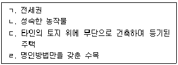
- 0개
- 1개
- 2개
- 3개
- 4개
(정답률: 알수없음)
40. 가등기담보 등에 관한 법률이 적용되는 양도담보의 효력에 관한 설명으로 옳지 않은 것은? (다툼이 있으면 판례에 의함)
- 양도담보권의 피담보채권의 범위는 저당권에 의해 담보되는 채권의 범위에 관한 규정이 적용된다.
- 양도담보권자에게는 양도담보권에 기한 물상대위가 인정된다.
- 양도담보권자가 담보목적 부동산을 임의로 처분한 경우, 그 부동산의 양수인이 선의이더라도 소유권을 취득하지 못한다.
- 양도담보권자가 귀속청산의 방법에 의하여 확정적으로 소유권을 취득하려면 적법하게 청산절차를 거쳐야 한다.
- 양도담보권은 우선변제적 효력이 있다.
(정답률: 알수없음)
2과목: 경제학원론
41. 사과 수요의 가격탄력성은 0.4이고, 배 가격에 대한 교차탄력성은 0.2이다. 사과와 배 가격이 각각 5% 하락한다면 사과의 수요는 얼마만큼 변화하는가? (단, 사과는 정상재이고, 가격탄력성은 절대값으로 표시한다.)
- 불변
- 0.5% 증가
- 1% 증가
- 1.5% 증가
- 2% 증가
(정답률: 알수없음)
42. 다음 그림은 X재에 대한 수요곡선이다. 다음 설명 중 옳은 것을 모두 고른 것은? (단, X재는 정상재이다.)
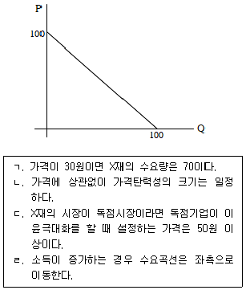
- ㄱ, ㄴ
- ㄱ, ㄷ
- ㄴ, ㄷ
- ㄴ, ㄹ
- ㄷ, ㄹ
(정답률: 알수없음)
43. 효용을 극대화하는 소비자 甲이 소득 100으로 완전보완재인 X재와 Y재만을 소비하고 있다. Y재의 가격은 10으로 일정하고 X재의 가격이 40에서 10으로 하락할 때 소비자의 효용이 증가한다. 이 때 X재의 가격이 하락하는 대신 소득이 얼마나 증가해야 동일한 효용의 증가를 가져오는가를 나타내는 동등변이(equivalent variation)는 얼마인가?(문제 오류로 가답안 발표시 3번으로 발표되었지만 확정답안 발표시 모두 정답처리 되었습니다. 여기서는 가답안인 3번을 누르면 정답 처리 됩니다.)
- 50
- 100
- 150
- 200
- 250
(정답률: 알수없음)
44. 효용을 극대화하는 소비자 甲이 X재와 Y재 두 재화만 소비한다. X재의 가격이 하락할 때 다음 설명 중 옳은 것을 모두 고른 것은?(문제 오류로 가답안 발표시 2번으로 발표되었지만 확정답안 발표시 모두 정답처리 되었습니다. 여기서는 가답안인 2번을 누르면 정답 처리 됩니다.)
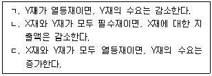
- ㄴ
- ㄱ, ㄴ
- ㄱ, ㄷ
- ㄴ, ㄷ
- ㄱ, ㄴ, ㄷ
(정답률: 알수없음)
45. X재의 시장수요함수가 P = 200-Q 이고 시장공급함수가 P = -40+2Q 이다. 정부가 가격상한을 100으로 책정하는 경우 수요를 충족시키기 위하여 생산자에게 지급해야 하는 X재 1단위당 보조금액은?
- 40
- 60
- 80
- 100
- 120
(정답률: 알수없음)
46. 효용함수가 U = X6Y4 이고 예산제약식이 3X + 4Y = 100 일 때 효용이 극대화되는 X재와 Y재의 구매량은 얼마인가?
- X=20, Y=10
- X10, Y=17.5
- X=5, Y=21.25
- X=1, Y=24.25
- X=0, Y=25
(정답률: 알수없음)
47. 재화 및 생산요소의 가격이 일정할 때 콥-더글라스 생산함수 Q = L0.5K0.5을 가진 기업의 특징이 아닌 것은? (단, L은 노동이고 K는 자본이며 단기에 고정생산요소이다.)
- 단기평균총비용이 체증한다.
- 단기한계비용이 체증한다.
- 단기평균가변비용이 체증한다.
- 장기한계비용이 일정하다.
- 장기평균비용이 일정하다.
(정답률: 알수없음)
48. 이윤을 극대화하는 기업 A와 B의 생산량과 이윤행렬은 다음과 같다. A는 슈타켈버그(Stackelberg) 모형의 선도자, B는 추종자로 행동할 때 A와 B의 생산량(QA, QB)은? (단, 이윤행렬의 괄호안의 수에서 왼쪽은 A의 이윤이고, 오른쪽은 B의 이윤이다.)
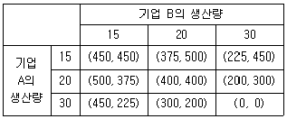
- (15, 15)
- (20, 15)
- (20, 20)
- (30, 15)
- (30, 20)
(정답률: 알수없음)
49. 독점기업의 수요함수는 Q = 10-P 이고, 한계비용은 0이다. 이 기업이 이윤극대화를 할 때 발생하는 자중손실(deadweight loss)의 크기는 얼마인가?
- 10
- 12.5
- 20
- 22.5
- 25
(정답률: 알수없음)
50. 완전경쟁시장에서 조업하고 있는 A기업의 생산함수는 Q = L0.5K0.5이고, 단기적으로 자본을 2단위 투입한다. 이 기업의 손익분기점에서 시장가격은 얼마인가? (단, 노동과 자본의 가격은 각각 1이다.)
- 1
- 2
- 3
- 4
- 5
(정답률: 알수없음)
51. A, B 두 나라에 각각 다섯 사람씩 살고 있다고 한다. A국과 B국에 사는 사람들의 소득은 각각 (1, 1, 2, 2, 4), (1, 2, 2, 2, 3)이라고 한다. 다음 설명 중 옳은 것은?
- 지니계수상으로 A국이 더 평등하며, 십분위분배율로 보면 B국이 더 평등하다.
- 지니계수상으로 B국이 더 평등하며, 십분위분배율로 보면 A국이 더 평등하다.
- 지니계수상으로 B국이 더 평등하며, 십분위분배율은 현재의 정보로는 계산할 수 없다.
- 지니계수상으로나 십분위분배율로나 A국이 더 평등하다.
- 지니계수상으로나 십분위분배율로나 B국이 더 평등하다.
(정답률: 알수없음)
52. 효용을 극대화하는 근로자 甲은 여가와 근로소득을 선택한다. 다음 중 관찰될 수 있는 경우를 모두 고른 것은? (단, 甲에게 여가는 정상재이다.)
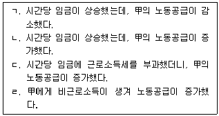
- ㄱ, ㄴ
- ㄴ, ㄹ
- ㄱ, ㄴ, ㄷ
- ㄱ, ㄷ, ㄹ
- ㄴ, ㄷ, ㄹ
(정답률: 알수없음)
53. 과수원주인인 甲과 양봉업자인 乙이 인근 지역에서 경제활동을 하고 있는데, 甲이 과실나무를 더 많이 심자 乙의 꿀 생산이 증가하고, 乙이 꿀벌의 수를 증가시키자 과수원 수확이 늘어나는 것을 확인할 수 있었다. 甲과 乙에게 발생하는 외부성에 관한 설명으로 옳은 것을 모두 고른 것은?
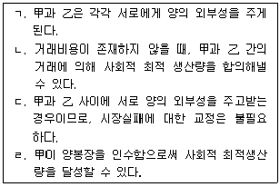
- ㄱ, ㄴ
- ㄴ, ㄷ
- ㄷ, ㄹ
- ㄱ, ㄴ, ㄹ
- ㄱ, ㄷ, ㄹ
(정답률: 알수없음)
54. 독점적 경쟁시장의 장기균형에 관한 설명으로 옳지 않은 것은?
- 장기평균비용이 최소가 된다.
- 한계수입과 한계비용이 일치한다.
- 가격과 장기평균비용이 일치한다.
- 기업들은 이윤을 극대화한다.
- 기업의 경제적 이윤은 0이다.
(정답률: 알수없음)
55. 민간항공기는 A국과 B국에서만 생산한다. 두 국가 항공사의 보수(이윤)행렬이 다음과 같다. 만일 두 나라 정부는 자국 항공사가 생산할 경우 각각 10억 달러의 생산보조금을 지급할 때 내쉬균형은 무엇인가?
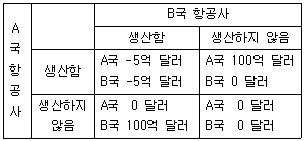
- A국과 B국에서 생산함
- A국에서만 생산함
- B국에서만 생산함
- A국과 B국에서 생산하지 않음
- ②, ④ 두 가지 경우
(정답률: 알수없음)
56. 지리적으로 분리되어 시장간 전매가 불가능한 두 시장 A, B에서 판매하고 있는 독점기업에 대한 수요곡선이 각각 PA = -QA + 20이고, PB = -0.5QB + 10이다. 한계비용이 5이고 이윤극대화를 추구하는 이 기업의 두 시장에서의 가격은 각각 얼마인가?
- PA=8, PB=12
- PA=12.5, PB=7.5
- PA=12, PB=8
- PA=7.5, PB=12.5
- PA=14, PB=6
(정답률: 알수없음)
57. 이윤을 극대화하는 기업의 생산함수가 Q = 2L0.5K0.5이고 단위당 노동(L)비용은 2, 자본(K)비용은 1이다. 이 기업의 총비용이 100이고 제품의 시장가격이 10인 경우 다음 설명 중 옳지 않은 것은? (단, 제품시장과 생산요소시장은 완전경쟁적이다.)
- 노동을 30단위 사용해야 한다.
- 한계기술대체율(MRTSLK)의 크기는 2이다.
- 이윤이 극대화되는 산출량은 50단위가 넘는다.
- 최대한 얻을 수 있는 이윤은 50을 넘는다.
- 자본을 50단위 사용해야 한다.
(정답률: 알수없음)
58. U = √Y의 효용함수를 갖는 소비자가 100만원의 가치가 있는 자전거를 소유하고 있다. 자전거의 도난확률이 0.5일 때 다음 중 옳지 않은 것은? (단, Y는 재화가치이다.)
- 위험한 기회를 다른 사람에게 전가할 때 지급할 최대 추가보상액은 50만원이다.
- 현재 이 소비자의 기대효용수준은 500이다.
- 손실액 전액을 보상해주는 보험의 경우 공정한 보험료는 50만원이다.
- 손실액 전액을 보상해주는 보험에 대해 이 소비자는 최대 75만원까지 지불할 용의가 있다.
- 이 소비자는 위험기피자이다.
(정답률: 알수없음)
59. 수요함수는 Qd = 200-P 이고 공급함수는 P = 100이다. 정부가 소비자에게 제품 1단위당 20원의 물품세를 부과할 때 소비자잉여는 얼마만큼 감소하는가?
- 1,200
- 1,400
- 1,600
- 1,800
- 2,000
(정답률: 알수없음)
60. 효율적인 자원배분에 관한 설명으로 옳지 않은 것은? (단, X, Y 두 재화 / A, B 2인 / L, K 2 생산요소 경제를 가정한다.)
- 소비의 효율성 조건은 두 재화에 대한 A와 B의 한계대체율이 같을 때 만족한다.
- 생산의 효율성 조건은 두 생산요소에 대한 X와 Y의 한계기술대체율이 같을 때 만족한다.
- 생산의 효율성 조건을 만족하는 점들을 이어서 연결한 선을 생산의 계약곡선이라 한다.
- 생산의 효율성 조건을 만족하는 점들을 X-Y 평면으로 옮겨 놓은 것을 생산가능곡선(production possibility curve)이라 한다.
- 생산의 효율성 조건, 소비의 효율성 조건, 종합적 효율성 조건을 모두 만족하는 점들을 X-Y 평면으로 옮겨 놓은 것을 효용가능곡선(utility possibility curve)이라 한다.
(정답률: 알수없음)
61. 솔로우(Solow) 성장모형에 따를 때 저축의 증가가 지속적인 성장을 초래하지 않는 원인은?
- 자본의 한계생산성 감소
- 자본의 한계생산성 증가
- 노동의 한계생산성 감소
- 노동의 한계생산성 증가
- 노동의 한계생산성 불변
(정답률: 알수없음)
62. 루카스 총공급곡선이 우상향하는 이유는?
- 재화시장 가격의 경직성
- 기술진보
- 실질임금의 경직성
- 재화가격에 대한 불완전 정보
- 완전신축적인 가격결정
(정답률: 알수없음)
63. 중앙은행이 요구불예금에 대한 법정지급준비율을 인상하면 지급준비금(ㄱ), 요구불예금(ㄴ)과 통화량(ㄷ)은 각각 어떻게 변화하는가? (단, 현재 법정지급준비율은 10%이고, 민간은행들은 초과지급준비금을 보유하지 않으며 가계는 현금을 보유하지 않는다.)(문제 오류로 가답안 발표시 5번으로 발표되었지만 확정답안 발표시 모두 정답처리 되었습니다. 여기서는 가답안인 5번을 누르면 정답 처리 됩니다.)
- ㄱ: 감소, ㄴ: 감소, ㄷ: 불변
- ㄱ: 감소, ㄴ: 증가, ㄷ: 감소
- ㄱ: 불변, ㄴ: 감소, ㄷ: 증가
- ㄱ: 증가, ㄴ: 불변, ㄷ: 감소
- ㄱ: 증가, ㄴ: 불변, ㄷ: 증가
(정답률: 알수없음)
64. 개방경제 K국의 국민소득계정이 다음과 같다. 국내총생산이 1,000일 때 실질이자율은 얼마인가? [(단, r은 실질이자율(%), Y는 국민총소득(GNI)이다.]
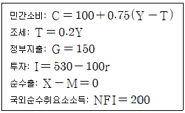
- 1.8%
- 2.5%
- 3.8%
- 5.0%
- 6.3%
(정답률: 알수없음)
65. 다음 ( )안의 내용으로 알맞은 것은?
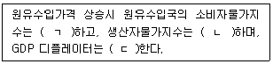
- ㄱ: 불변, ㄴ: 불변, ㄷ: 상승
- ㄱ: 상승, ㄴ: 상승, ㄷ: 불변
- ㄱ: 상승, ㄴ: 불변, ㄷ: 상승
- ㄱ: 불변, ㄴ: 상승, ㄷ: 상승
- ㄱ: 상승, ㄴ: 상승, ㄷ: 상승
(정답률: 알수없음)
66. 생산함수가 Y = AK0.7L0.3인 경제에서 총요소생산성(A)이 2%, 자본투입량(K)이 10%, 노동투입량(L)이 5% 증가한다면 노동자 1인당 소득의 증가율은 얼마인가?
- 3.5%
- 5.5%
- 7.0%
- 9.0%
- 10.5%
(정답률: 알수없음)
67. 화폐수요함수가
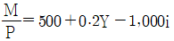
이다. Y=1,000, i=0.1일 때, P=100과 P=200이라면 화폐유통속도는 각각 얼마인가? (단, M은 통화량, P는 물가, Y는 실질국민소득, i는 명목이자율, V1은 P=100일 때 화폐유통속도, V2는 P=200일 때 화폐유통속도이다.)- V1 = 5/6, V2 = 5/6
- V1 = 5/6, V2 = 10/6
- V1 = 10/6, V2 = 10/6
- V1 = 10/6, V2 = 20/6
- V1 = 20/6, V2 = 20/6
(정답률: 알수없음)
68. 총수요
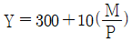
과 단기총공급 Y = 500 + (P – Pe)인 경제의 최초균형에서 통화량이 1,000, 물가가 50이다. 통화량이 1,260으로 증가하면 단기균형(ㄱ)과 장기균형(ㄴ)에서 물가는 각각 얼마인가? (단, Y는 국민소득, M은 통화량, P는 물가, Pe는 예상물가이다.)- ㄱ: 50, ㄴ: 60
- ㄱ: 60, ㄴ: 50
- ㄱ: 60, ㄴ: 60
- ㄱ: 60, ㄴ: 63
- ㄱ: 63, ㄴ: 63
(정답률: 알수없음)
69. 소비의 항상소득가설과 생애주기가설에 관한 설명으로 옳은 것을 모두 고른 것은?
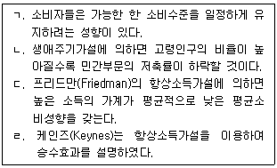
- ㄱ, ㄴ
- ㄱ, ㄹ
- ㄴ, ㄷ
- ㄱ, ㄴ, ㄷ
- ㄴ, ㄷ, ㄹ
(정답률: 알수없음)
70. 고정환율제도하에서 자본이동이 완전한 경우 정부지출과 조세를 동일한 크기만큼 증가시켰을 때 장기 거시경제 균형의 변화에 관한 설명으로 옳지 않은 것은?
- 물가 상승
- 명목임금 상승
- 재화와 서비스에 대한 총수요량 불변
- 실질GDP 불변
- 순수출 불변
(정답률: 알수없음)
71. 소규모 개방국가인 A국과 B국의 통화량 증가율은 매년 각각 5%와 3%이다. 두 국가의 실질 GDP 증가율은 매년 2%로 일정하고 여타 면에서도 서로 동일하다. 이 때 두 국가의 장기균형에 관한 설명으로 옳지 않은 것은? (단, 두 국가의 명목환율은 A국 통화 1단위와 교환되는 B국 통화의 양으로 정의한다.)
- 명목환율은 하락할 것이다.
- A국의 물가상승률이 B국보다 더 높을 것이다.
- B국의 명목이자율이 A국보다 더 낮을 것이다.
- A국의 명목GDP 성장률이 B국보다 더 높을 것이다.
- A국은 무역수지 흑자, B국은 무역수지 적자가 발생할 것이다.
(정답률: 알수없음)
72. 솔로우(Solow) 성장모형에서 1인당 생산함수 y = k1/2이다. 저축률이 0.2, 감가상각률이 0.1, 인구증가율과 기술진보율은 모두 0이라면, 이 경제의 균제상태(steady state)의 1인당 자본스톡의 값은? (단, y는 1인당 생산, k는 1인당 자본스톡이다.)
- 1
- 21/2
- 2
- 4
- 8
(정답률: 알수없음)
73. 거시경제의 단기균형과 장기균형에 관한 설명으로 옳은 것은?
- 물가가 하방경직적일 때 총수요는 단기적으로 실질GDP에 영향을 미친다.
- 통화정책과 재정정책은 장기적으로만 실질GDP에 영향을 미친다.
- 고전적 이분성은 단기에만 성립하고 장기에는 성립하지 않는다.
- 물가와 임금은 장기에 있어서만 경직적이다.
- 통화정책은 단기적으로는 명목GDP에 영향을 미치며 장기적으로는 실질GDP에 영향을 미친다.
(정답률: 알수없음)
74. 총공급곡선이
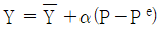
인 총수요-총공급 모형에서 경제가 현재 장기균형상태에 있다. 이 경제의 중앙은행이 통화량을 감소시킬 경우, 물가 예상이 합리적으로 형성되고 통화량 감소가 미리 예측된다면 다음 설명 중 옳은 것은? (단, Y는 실질GDP,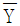
는 실질GDP의 장기균형 수준, α는 0보다 큰 상수, P는 물가, Pe는 예상물가수준이다.)- 실질GDP는 즉시 감소한 다음 서서히 원래 수준으로 복귀한다.
- 물가는 즉시 감소한 다음 서서히 원래 수준으로 복귀한다.
- 물가는 즉시 감소하고 실질GDP도 즉시 감소한다.
- 물가는 서서히 감소하고 실질GDP는 즉시 감소한다.
- 물가는 즉시 감소하고 실질GDP는 원래 수준을 유지한다.
(정답률: 알수없음)
75. 화폐수요함수는
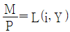
이고, i가 낮을수록, Y가 높을수록 화폐수요는 증가한다. 중앙은행이 내년부터 통화량 증가율을 높이기로 발표할 때 모든 개인들이 이 발표를 그대로 신뢰한다면, 금년도 이 경제에서 발생되는 현상으로 옳은 것은? (단, P는 물가, M은 통화량, r은 실질이자율, πe은 예상 물가상승률, 명목이자율 i = r + πe, Y는 실질GDP이며, 물가는 항상 신축적으로 조정된다.)- 아직 통화량 증가가 발생한 것은 아니므로 πe도 변하지 않을 것이다.
- 아직 통화량 증가가 발생한 것은 아니지만 현재 물가 P는 하락할 것이다.
- 아직 통화량 증가가 발생한 것은 아니지만 현재 물가 P는 상승할 것이다.
- πe가 상승할 것이므로 화폐수요가 증가할 것이다.
- πe가 하락할 것이므로 화폐공급이 증가할 것이다.
(정답률: 알수없음)
76. 신고전학파의 투자이론에 관한 설명으로 옳지 않은 것은? (단, 감가상각률과 자본재 가격의 변화율 및 조세의 영향은 고려하지 않는다.)
- 실질이자율이 상승하면 기업의 투자는 감소한다.
- 실질이자율이 하락하면 자본의 한계생산도 하락한다.
- 경제 전체의 기술진보로 인하여 자본의 한계생산이 높아지면 기업의 투자수요는 증가한다.
- 경제 전체의 기술진보로 인하여 자본의 한계생산이 높아지면 이자율은 상승한다.
- 감가상각률을 고려하지 않으므로 자본재 1단위에 대한 투자의 기회비용은 자본재 1단위의 매매가격과 같다.
(정답률: 알수없음)
77. A재와 B재만 생산하는 국가의 재화 생산량과 가격이 다음과 같다. 
2012년도를 기준연도로 할 때 2013년의 실질GDP 성장률이 25%이고 GDP 디플레이터가 90이라면 ( ㄱ )과 ( ㄴ )에 알맞은 것은?
- ㄱ: 8, ㄴ: 60
- ㄱ: 8, ㄴ: 80
- ㄱ: 10, ㄴ: 80
- ㄱ: 10, ㄴ: 100
- ㄱ: 12, ㄴ: 100
(정답률: 알수없음)
78. 자국통화를 지속적으로 저평가(undervaluation)할 때 나타나는 현상으로 옳은 것은?
- 자국통화의 공급이 감소된다.
- 디플레이션이 발생한다.
- 국내 재화와 서비스의 가격이 상승한다.
- 자국 이자율이 하락한다.
- 외환보유고가 고갈된다.
(정답률: 알수없음)
79. 단기 필립스곡선은 πt = πe - 0.5(ut - un)이다. 중앙은행이 실업률을 un수준으로 달성하기 위한 방법으로 옳은 것은? (단, πt는 t기의 물가상승률, πe는 예상 물가상승률, ut는 t기의 실업률, un은 자연실업률이다.)
- 통화량 증가율을 높이다가 예고 없이 갑자기 낮춘다.
- 통화량 증가율을 낮추다가 예고 없이 갑자기 높인다.
- 통화량 증가율을 일정하게 유지한다고 공표한 다음 그대로 지킨다.
- 통화량 증가율을 일정하게 유지한다고 공표한 다음 더 높은 수준으로 바꾼다.
- 통화량 증가율을 일정하게 유지한다고 공표한 다음 더 낮은 수준으로 바꾼다.
(정답률: 알수없음)
80. 일부 사람들이 실업급여를 계속 받기 위해 채용될 가능성이 매우 낮은 곳에서만 일자리를 탐색하며 실업상태를 유지하고 있다. 다음 중 이러한 사람들이 실업자가 아니라 일할 의사가 없다는 이유로 비경제활동인구로 분류될 때 나타나는 현상으로 옳은 것은?
- 실업률과 경제활동참가율 모두 높아진다.
- 실업률과 경제활동참가율 모두 낮아진다.
- 실업률은 낮아지는 반면, 경제활동참가율은 높아진다.
- 실업률은 높아지는 반면, 경제활동참가율은 낮아진다.
- 실업률은 낮아지는 반면, 경제활동참가율은 변하지 않는다.
(정답률: 알수없음)
정관이나 사원총회의 결의로 금지하지 않는 한, 이사는 타인으로 하여금 법인의 제반사무 처리를 포괄적으로 대리하게 할 수 있는 이유는, 이사는 법인의 대표자로서 법인을 대신하여 사무를 처리할 수 있는 권한을 가지기 때문이다. 이러한 권한은 이사의 업무를 효율적으로 처리하기 위한 것으로, 이사가 법인의 이익을 해치지 않는 범위 내에서 행사해야 한다.